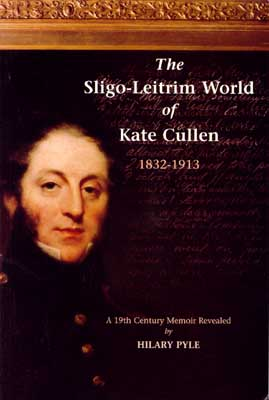

| Follow the above link to the main page for this topic or click the graphic below to visit the Homepage. |
 | The Sligo-Leitrim World of Kate Cullen 1832-1913 A 19th Century Memoir Revealed by Hilary Pyle |
 |
Kate Cullen's lively manuscript account makes rivetting reading about the close-knit life of Protestant Ireland, a society absorbed in its own triumphs and misfortunes, in its religion and fashions, and yet conscious that at that moment history was being made. During the 1840s she lived in Dublin, staying for periods with married sisters in Sligo, Donegal and Leitrim. She witnessed the Famine, though she was cushioned from it. She married the bank manager in Carrick-on-Shannon, moving as a widow to Silgo to earn her living as manageress of the County Club. Kate remembered her experiences so vividly that around the turn of the century her daughter, Susan L. Mitchell, then a budding writer, persuaded her to dictate them. The memoir has an additional importance in the background that it reveals to one of the leading figures of the Irish literary revival. Susan L. Mitchell, eager to learn of her own origins, was later distinguished as a poet and friend of AE, Yeats and Seamus O'Sullivan. |
| Hilary Pyle, art critic and biographer, is Curator of the Yeats Museum in the National Gallery of Ireland. Previous publications include Portraits of Patriots and biographies of the writer James Stephens and of Jack B. Yeats. She has recently been preparing a life of Susan L. Mitchell, poet and satirist of the Irish Renaissance, daughter of Kate Cullen. | |
Index of Persons [Page references for illustrations are in italics] | |
| - A - Airley the Cooper, 86 Albert, Prince, 77 Algeo family, 13 Algeo, Mrs, 27 Allsops, 78 Allsop, Mrs, 78 Annaly, Lord, 13 Armstrong, Colonel, 27 Arthur, Mrs (of Ennis), 75, 76 Atthill, Rev., 27 Austen, Jane, 40 - B - Banks, John, 50 Barnett, Monsieur, 47 Bass family, 78 Beresford, Dr. John Claudius, 6,28 Bishop of Kilmore, see Beresford, Dr. Blacker, Dean, of Mullabrack, 48 Blair (the sexton), 27, 33 'Blood, Noble' (also 'The Height of Honour'), 33 'Blue, Donald', see Ryan, Denis Blythe, Misses, 116 Bolton, Henrietta, 48 Brabazon, Bidz, see Mitchell, Bidz Finucane Brew, Lucy, 39 Bronte, Emily, 36 Brown, Sara, 80 Brown, Tom (Clerk of the Peace), 80 Browne, David, 115 Browns, 80 Burton, Dr. Thomas, 73, 75 Burton, Sir Frederick, 73, 75, 76 Butler, Austin, 36 Butler, John (the steward), 39 - C - Campbell, Aunt Eliza, see Cullen, Eliza Campbell, Mr., 11, 12 Campbell, Sir Robert, 60 Canning, Maria, 53 Cannon, Mr. (Resident Magistrate in Maryborough), 73 Cannons, 73, 75 Carmody, Mr., 31 Carrick, Pierce, 46 Church, Jemmy, 100 Cleary, Mary, 116, 122 Collins, Katie, 116 Connolly, Harry (the butcher), 38 Conyngham, Lord, 48 Cornwall, Henrietta, 48 Cleary, Mary, 86 Cooper (Michael Mitchell's deputy), 98 Cowper, 14 Creagh, Mary, 38 Cregan, Martin, 6, 7, 16 Cross, 3, 4, 9, 10, 16 Crowle, Kitty, 33 Cullen, Bessie (also Bessy, Kate's sister, Bessie St. Leger), 19, 22, 23, 25, 27, 29, 30, 32, 35, 39, 45, 54, 61, 79, 80, 86, 89, 97, 99, 104, 106, 108, 119 Cullen, Bridget (Bidz) Finucane, xii, 4, 5, 6, 7, 8, 10, 16, 17, 19, 21, 23, 25, 26, 27, 28, 29, 35, 36, 45, 46, 47, 50, 58, 60, 73, 79, 92, 105, 107; 8 Cullen, Carn Cross (Carney's son), 7, 9 Cullen, Carn Cross (Lt.-Col. John James' brother), 4, 5, 10 Cullen, Carn Cross (the 'Minor', Kate's brother), 20, 28, 29 Cullen, Carn Cross of Glenade (Carney, Kate's cousin), 5, 6, 7, 8, 16, 17, 27, 44 Cullen, Rev. Carn Cross (Kate's grandfather), 3, 4, 9, 10, 16, 60 Cullen, Catherine Theresa, see Cullen, Kate Cullen, Daniel Finucane, 28 Cullen, Diana (also Mrs Faris, 'Widow Faris' and Diana de L'Herrault), 20, 22, 29, 30, 31, 32, 40, 41,44, 45, 53, 54, 67, 80, 89, 90, 91, 92, 93, 96, 100, 103, 104, 108, 111, 119, 120 Cullen, Eliza, 11, 12, 60, 61 Cullen, Elizabeth, see Cullen, Ellen Cullen, Ellen, 3, 4, 6, 16 Cullen, Francis (cousin of Lt-CoI John James Cullen), 17 Cullen, Francis Nesbitt (Kate's brother), 3, 20, 28, 31, 41, 43, 47, 119 Cullen, Georgina, 20, 22, 28, 45, 46, 47, 61, 64, 65, 78, 79-81, 120 Cullen, Giles William, 23, 29, 45, 46, 53, 67, 72, 75 Cullen, Henry Francis, 10, 27, 44 Cullen, Hester, 17 Cullen, Jane (Aunt Jane), 10, 11, 12, 20, 27, 45 Cullen, Janey (also Janey Shepperd), 20, 22, 28, 29, 31, 46, 47, 61, 92, 93, 99, 104, 105, 106, 107, 108, 111, 120 Cullen, Jemmy ('Jamesy'), 19, 20, 28, 29, 30, 31, 43, 46, 47, 58, 67, 79, 92, 104, 105, 107, 108, 118 Cullen, Lt.-Col. John James, xii, 2, 4, 5, 6, 8, 10, 12, 13, 14, 16, 17, 19, 20, 21, 22, 26, 27, 28, 29, 30, 31, 35, 44-45, 66, 76; 7 Cullen, Johnny Marcus, 20, 27, 28, 29, 44, 45, 78, 120 Cullen, Judith Anne, 3 Cullen, Kate (also Catherine Theresa and 'Kitsy'), birth in 1832, 6; childhood at Skreeney, 13-34.; marriage of sisters Bessie and Diana, 30; education, 31, 47-49; visits married sisters 35-43; death of father, 44; in Dublin, 44f; interest in theatre, 53-4; religion, 26-28,54-58,93-5,111-2,118; death of brother Paddy, 60-1; marriage of sister Mary, 25-6; spends a year with Mary in Donegal, 61-66; death of Mary, 65-66; marriage of sister Georgina, 65; long visit to Diana in Carrick-on-Shannon, 67; engagement to Jack McCulloch, 67-72, at Maryborough, 73f.; attachment to Dr. Burton, 73-75; returns to Dublin, 75; moves with mother to Sligo, 79; arranges to visit Jack and Georgina in Ascension, 80-81; engagement to Michael Mitchell, 81ff.; wedding, 99; birth of children, 107; death of husband, 114-5; leaves Carrick and moves to Sligo, 116; stewardess of County Club, 117f.; death of Bessie, and brother, Francis, 119; death of sisters Diana and Janey, and brother Johnny Marcus, 120; daughter Susan comes to live with her in Sligo, 120; moves to Dublin, 121; dies in Dublin, 123 Cullen, Major, 13, 16 Cullen, Mary Jane (also Mrs Labatt, Mary Labatt), xii, xiii, 22, 26, 35, 45, 47, 61, 62, 63, 66 Cullen, Minnie, 27 Cullen, Paddy, 20, 22, 28, 31, 45, 46, 60, 61 Cullen, Patrick (Kate's ancestor), 1 Cullen, Patrick (Kate's great-grandfather), 2 Cullen, Patrick (Kate's grand uncle), 2, 20 Cullen, Rev. Carn Cross (Kate's grandfather), 3, 4, 9, 10, 16, 60 Curran, Sarah, 30, 59 Curran, William Henry, 30, 59 - D - Davis, Mrs., 48 Davis, Thomas, 80 Davys, Mrs, 1 Day, Rev. Maurice, 57 Daxon, Catherine, 5 Daxon, Giles ('Great-Uncle Giles'), 5, 23, 29, 45 Dickens, Charles, 71 Dickson, Major, 4 Dickson, Hester (Aunt Hessie), 10, 28 Dickson, Miss (Hester), 4, 10 Dickson, Mrs., 10 Dolby, Miss, 54 Dowling, Aunt, 38, 50 Doyle, John, 23 'Drummy, The', 100 Duncan, Jane, 33 Duncan, Miss, 87 Dwyer, Dr., 76 - E - Elliott, John Jack), 65, 78, 79, 80 Elliotts, 76, 78 Emmet, Robert, 30, 59 Enniskillen, Lord, 26, 63, 66 - F - 'Fair Queen', 33 Fannin, Pat, 39 Faris, Alick, 30, 41, 44-45, 89 Faris, Colonel, 103 Faris, Diana, Mrs, see Cullen, Diana Faris, John, 44 Faris, Sara, 31, 100 Farises, 32, 40, 44, 47, 67 Farrell, Thomas, 123 Faucit, Helen, 53 Faussett, Sally, 107 Faussetts, Misses, 22 Fielding, 14 Finaigle, Mrs, 49 Finucane, Andrew, 119 Finucane, Daniel, 5, 28 Finucane, Bridget (Bidz), see Cullen, Bidz Finucane Finucane, Grandmother, 13, 22, 29, 32, 36, 45 Finucane, Michael (Uncle Michael), 26, 29, 36, 39, 45-46 Finucane, Morgan, 5 Fishers, Miss, 46 Fitzgerald, Vesey, 23 Flins, Mrs, 25 Fogherty, Maureen, 33 Ford, Mr., 67 Franklin, Harry, 121 French, Christopher, 112 French, Mrs (formerly Miss Percy), 112 French, Percy, 112 Fleury, Dr., 57 - G - Galbraith, Mrs ('Granny'), 29 Galway, John, 54 Gaskell, Mrs, 40 Gisborne, Mr., 67 Gledstanes, Captain (Uncle George), 10, 11, 27 Glenavy, Beatrice, 118 Gordon, Mrs, 107 Gordon, Richard, 99 Gore-Booths, 86 Gorman (the butler), 20, 21, 22, 28, 35, 47, 50, 51 Gorman, Catherine ('The Heiress), 51 Gorman, Mrs Julia, 50 Guinness, Henry Grattan, 104 Gregg, Miss, 47, 48, 49, 50, 61 Gregg, Miss Fanny, 48, 50 Gregg, Rev. John (later Dean of Cork), 54, 57 Gregory, Lady, xi Grisi, 53, 54 Guthrie, Dr., 99 - H - Hamilton, John, 27 Hamilton, Mr., 96 Hamilton, Mrs, 65 Hamilton, Rev. Abraham, 27 Hamilton, Sir Frederick, 1 Heman, Geo, 84 Hemans, Mrs., 48 Homer, 31 'Honour, The Height of, see 'Blood, Noble' Hume, Mr., 64 'Hume, The Widow', 64 - J - Jelly, Miss (later Mrs Kemiss), 75 John (Michael Mitchell's manservant), 95, 96 Johnson, Mrs (formerly Miss Percy), 112 Jones, Eliza, 11 Jones, Jemima, 11, 12 Jones, Major, 11, 12 Jones, Mrs, see Cullen, Eliza Julian (band conductor), 49, 50 - K - Kaffir, Jack, 78 Kean, Mrs, 50 Keane, Charles, 53 Keane, Ellie, 64 Keane, Maria, 64 Keane, Mrs Ellen (nee Tree), 53 Kellett, William, 54 Kemiss, Mr., 75 Kemiss, Mrs (formerly Miss Jelly), 75 Kilfenora, Dean of, 39 Kirkwood, Andrew, 108 Kirkwood, Anna, 67, 108 Kirkwood, Miss ('Fair Queen'), 33 Kirkwood, Sydney, 96, 108 Kirkwood, Thomas, 108 Kitty (the cook), 38 Knox, Madame, 16 Krause, Mr., 57 - L - Labatt, Dr. Samuel, 25 Labatt family, 32 Labatt, Jonathan, 25 Labatt, Mary, see Cullen, Mary Jane |
Labatt, Rev. Edward, xii, 25, 26, 36, 44, 63, 64, 65, 66, 97, 99 Lane, Harry, 78 Langstaff, Susan, see Mitchell, Susan Langstaff Lauder, Mr., 84 Lauder, William, 103 'Laundry, Mary the', 33 Lavin, Paddy, 113 Lawless, 'Honest Jack', 25; 23 Lawson, Miss, 106 Lefroy, Miss, 57 Leitrim, Grand Jury of, 44 Leitrim, Lord, 13, 41 Lever, Charles, 5 L'Herrault, Madame de, 101, 113 L'Herrault, Victor de, 72, 84, 89, 90, 93, 95, 96, 97, 101, 102, 103, 104, 111, 113 Lind, Jenny, 54 Little, Bennett, 41, 67, 80 Little, Dr., 79, 86, 87 Little, Roper, 41 Littles, 87 Lloyd, Mr, 47 Lodge, Alexander, 64 Lodge, Letitia, 64 Lodge, Mr., 64 Lodge, Mrs, 64 Lodge, Richard, 64 Lodges, 65 Long, James, 67, 89 Louis Philippe, 53 Lorton, Lord, 17 Lover, Samuel, 25 Lowe, Mr., 57 - M - 'Mac, Mrs', 42 MacNeill, Hugh, 57 Maguire, 25 Maguire, Mr. (later Dean), 31 Mahony, James, 77 Manley, Grand Aunt, 4, 9, 35 Malton, James, 55 Marie Antoinette, 78 Mario, 53 Markiewicz, Constance, 122 Marsh, Sir Henry, 75 Martin, Patrick, 53 Matthew, Father, 28, 100 Maunsell, Miss, 4 McCloskey, 100, 101 McCulloch, Christina, 70 McCulloch, Henry, 70 McCulloch, Jack John Ramsay), 67, 69, 70, 71, 73, 74, 84, 89 McCulloch, Mr. ('The Governor'), 69 McCulloch, Mrs, 69 McLeod, Mr., 86 McNally, Agnes, 48 McNally, Henrietta, 48 Mills, Honor, 96 Mitchell, Adam, 87, 92 Mitchell, Bidz Finucane (also Bidz Brabazon), 107, 116; 117 Mitchell, George (Michael Mitchell's father), 82 Mitchell, George Cullen (Michael and Kate's son), 107, 116, 117 Mitchell, Gilly (Michael Thomas), 107, 108, 116, 117, 121 Mitchell, James, 82, 85, 107 Mitchell, Jane, 84 Mitchell, Jinny, 107, 116, 121 Mitchell, John James Jack, and later Johnny), 107, 116, 117, 122 Mitchell, Kate Cullen, see Cullen, Kate Mitchell, Margaret, 84, 92 Mitchell, Michael (Kate's husband), 81, 82, 83, 84, 85, 86, 89, 90, 91, 92, 93, 94, 95, 96, 97, 98, 99, 100, 101, 102, 103, 104, 107, 111, 113, 114; 91 Mitchell, Mrs (of Belfast), 52 Mitchell, Sarah, 83, 84 Mitchell, Susan (Michael's sister), 82, 87 Mitchell, Susan L. (also Sue; Michael and Kate's daughter), xi, xiii, 1, 21, 83, 94, 107, 114, 116, 120, 121, 122, 123; 122 Mitchell, Susan Langstaff (Michael's mother), 82, 84, 92 Mitchell, Thomas, 82, 83, 92 Mitchell, Victoria Diana ('Baby'), 107, 116; 120 Molly Maguires, 84 Mooney, Mr., 112 Moore, George, xi Moore, Tom, 30, 53 Moses, John, 47 Mount Charles, Lord, 36 Moyreau, Jean, 17 Mullany, Mr., 93 - N - Nash, Rev. Herbert Mandeville, 5 Nelson, Mr., 17 Nesbitt, Carn Cross, 2 Nesbitt, Isabella, 2 Noone, Peter (Sir Frederick Burton's coachman), 75 - O - O'Brien, Dr., 38 O'Brien, Jimmy, 33 O'Brien, Mary Jane, 38, 39 O'Brien, Mrs, 38 O'Callaghan, Mrs George, 23 O'Connell, Daniel, 23, 25, 58, 59; 23 O'Connor, Amelia, 48 O'Loughlens, 50 O'Sullivan, Seumas, 123 Ottley, Mr., 67 - P - Palmer, Captain, 9, 10 Palmer, Henry, 32, 33 Palmer, Jane, 8 Palmer, Kate, 9, 10 Palmer, Mary, 107 Palmer, Mary-Anne, 20 Palmer, Susan, 20 Parnell, Charles Stewart, xiii Patten, Anna, 17 Payne, Colonel, 78 Payne, Mrs, 78 Pedro, Don, 70 Peel, Sir Robert, 78 Peels, 78 Percy, Misses, 112 Percy, Rev. William, 112 Percy, Robert, 75 Percy, Sarah, 80 Peyton, Mrs, 93 'Peyton, The Widow', 42 Pischek (Polish singer), 50 Plunkett, Horace, 121 Plunkett, Miss, 33 Pollexfen, George, 120 Pollexfens, 116 Pollock, Mr., 57 Pollocks, 98 Power, Nancy, 38 Price, Mr., 71 Price, Mrs, 71 Prince Regent, 6 Pyms, The, 48 - R - Racine, 4 Raoux, Jean, 18 Reynolds, Miss, 42 Reynolds, Biddy, 42 Robertson, Daniel, 56 Robinson, Dr. Francis, 47, 50 Robinson, Frank, 54 Robinson, Joe, 54 Robinson, John, 54 Robinson, William, 54 Robinson, Mrs, 48 Robinson, Mrs (Michael Mitchell's housekeeper), 96 Robson, 54 Rorke (the gardener), 33 Rosse, Lord, 84 Russell, George, 120 Rutherford, Mr., 1, 2, Ryan, Denis ('Donald Blue'), 32, 33 - S - St. George, Mr., 72 St. George, Charles Manners, 84, 89, 100, 102, 103, 104 St. George, Christina, 102, 103, 104 St. Germains, Lord, 76 St. Leger, Noblett, 19, 30, 39, 47, 61, 79, 91, 99, 106, 107, 111 St. Legers, 32, 46, 87, 95, 97, 99 St. Paul, 25 Shakespeare, 14, Sheil, Richard Lalor, 25,23 Shepperd, Rev., Noble, 104, 105, 106, 108, 112, 14, 116 Shepperd, Mrs, 105, 114, 116 Shugal, Mrs, 16, 16 Singer, Dr., 57 Smith, Messrs, 54 Smollett, 14 Soden, Elizabeth, see Cullen, Ellen Stacpoole, Andrew, 37, 71 Stacpoole, Aunt, 32, 36, 37, 38, 39, 47 Stacpoole, Diana, 39 Stacpoole, Kate, 36, 37 Stacpoole, Richard, 36 Stacpoole, Uncle, 34, 36, 37, 38, 39 Stacpoole, Willie, 37, 38 Stacpoole family, 43 Steele, Tom, 58 Stuart, Mr. Murray, 65 Synge, J.M., xi - T - Tait, Dr. (of Manorhamilton), 45 Tandy, Mrs, 73 Tandy, Napper, 73 Tennison, Lt.-Col. Edward King, 41 Tennison, Lady Louisa, 41 Tighe, Maggie, 113 Toler, Anne, 20, 78 Toole, Mr., 47, 50 Tottenham, Anne, 35 Towell, Miss (later Mrs Allsop), 78 Trants, 78 Tristram, Larry (balladeer), 82 Tree, Ellen (later Mrs Keane), 53 Turner de Lond, William, 24 - U - Ussher, Archbishop, 57 - V - Vandeleur, Nellie, 57 Verschoyle, Mr., 57 Victoria, Queen, 76; 77 Virgil, 31 - W - Waddell, Mary, 48 Waylett, Mrs, 39 Webb, Eliza, 27, 58 Wegg, Colonel, 87, 93 Wegg, Susan, 93, 116 Weggs, 87 White, Tom (Member for Leitrim), 43 Whitelaw, Miss, 65 Whitsitt, Mary Jane, 48, 49 Whyte, Colonel Sam, 10 Whyte, Luke, 13 Willis, Mr., 31 Williams, Mr. (Kate's dancing teacher), 47 Williams, Mr., 61 Wilson, Bob (the Steward), 33 Wilson, George Venables, 65 Wilson, Peggy, 33 Wilson, Mrs, 39 Wilson, Mrs George Venables, 65 Wisdom the Wine Merchant, 44 Woronzov, Prince, 74 Wynne, Colonel John, 16 Wynne, Judith (Kate's great grandmother), 2, 20, 63 Wynne, Owen, 2 Wynne, Mr., 112 Wynne, Mr. (of Sligo), 116 Wynne, Mrs, 112 Wynnes, 86 - Y - Yeats, Jack B., 110, 116 Yeats, Lily, 122 Yeats, William Butler, xi, 1 Yeatses, 120 |